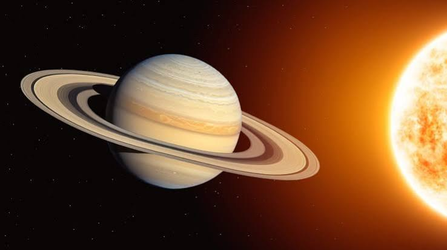
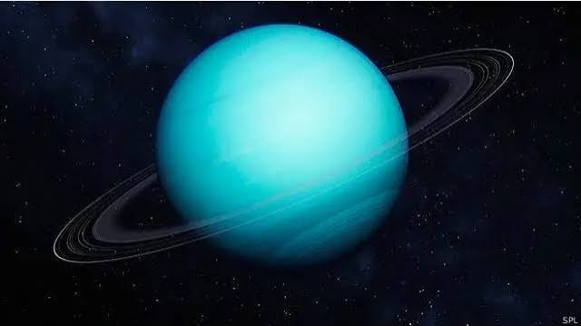

The Planets
From the scorching surface of Mercury to the icy winds of Neptune, explore the diverse worlds of our cosmic neighborhood.

☿ Mercury
The Swift Planet. Mercury is the smallest planet and closest to the Sun. It has extreme temperature swings from −180°C to 430°C due to having no atmosphere.

♀ Venus
Earth's Twin. Venus is similar in size to Earth, but its thick, toxic atmosphere creates a runaway greenhouse effect, making it the hottest planet.

🌍 Earth
The Blue Marble. Our home planet is the only known world to harbor life. With liquid water covering 71% of its surface, it's a true oasis.

♂ Mars
The Red Planet. Mars is a dusty, cold, desert world with a very thin atmosphere. It's home to Olympus Mons, the tallest volcano in the solar system.

♃ Jupiter
The Gas Giant. Jupiter is the largest planet in our solar system. Its iconic Great Red Spot is a massive storm that has been raging for centuries.

♄ Saturn
The Ringed Giant. Saturn is famous for its spectacular ring system, made of billions of ice and rock particles. It is the least dense planet.

♅ Uranus
The Tilted Ice Giant. Uranus rotates on its side, likely due to a massive collision. Its pale blue color comes from methane in its atmosphere.

♆ Neptune
The Windy World. Neptune is the eighth and farthest known planet from the Sun. It's a dark, cold, and incredibly windy world.